Aset pixel orisinal untuk prototipe presentasi. SVG transparan berbasis grid 16 × 16. Sumber yang sama dipakai oleh renderer Canvas. Tidak mengambil aset, logo, atau kode dari Final Outpost.
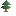
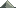
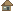
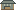
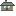
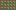
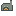
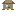
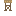
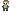
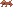
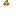
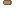
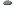
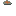
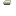
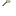
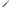
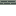
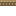